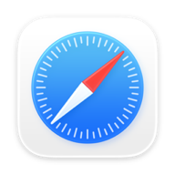

Bêta gratuite pour macOS
Télécharger
BookmarkBridge.
La version bêta n’est pas encore notariée par Apple. Le message de sécurité affiché au premier lancement est donc attendu : les trois étapes ci-dessous vous guident sans désactiver les protections de votre Mac.
Version 0.9.4 (build 2) · macOS 26.5 minimum · environ 10,03 Mio.

SafariUne application macOS native, locale et sans extension.
Première ouverture
Trois étapes, une seule fois.
Installez BookmarkBridge puis autorisez sa première ouverture avec les réglages prévus par macOS. Ces écrans peuvent varier légèrement selon votre version du système.
-
Télécharger et ouvrir BookmarkBridge
Téléchargez le DMG, ouvrez-le et glissez BookmarkBridge.app dans Applications. Lancez ensuite BookmarkBridge depuis ce dossier. macOS affiche le blocage ci-dessous : cliquez sur Terminé.

Le premier blocage est normal pour cette bêta non notariée. -
Autoriser dans Réglages Système
Ouvrez Réglages Système, puis Confidentialité et sécurité. Descendez jusqu’à la section Sécurité et cliquez sur Ouvrir quand même à côté du message concernant BookmarkBridge.

Le bouton n’apparaît qu’après une première tentative d’ouverture. -
Cliquer sur « Ouvrir quand même »
Dans la dernière fenêtre de confirmation, cliquez sur Ouvrir quand même. macOS peut demander votre mot de passe ou Touch ID. BookmarkBridge s’ouvrira ensuite normalement.

Vérifiez toujours que le nom affiché est bien « BookmarkBridge ».
Cette procédure autorise uniquement BookmarkBridge. Elle ne désactive ni Gatekeeper ni les contrôles de sécurité des autres applications.